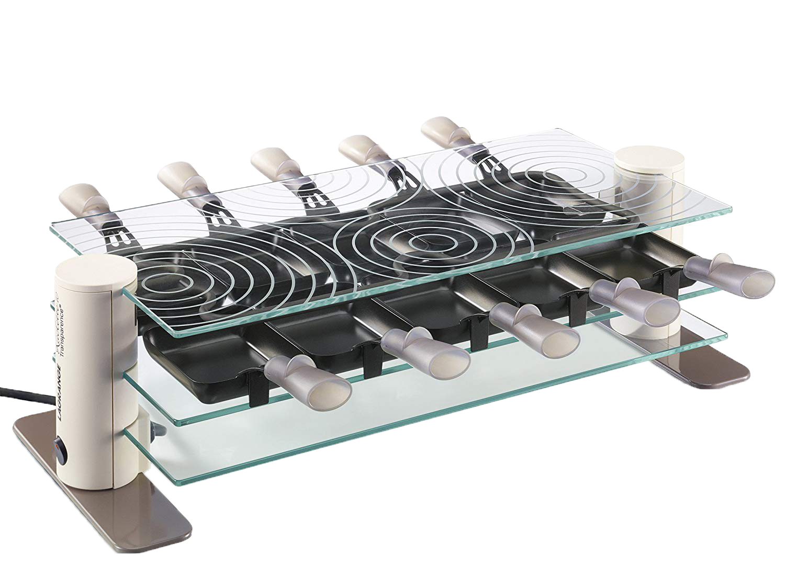

Caracteristiques

Poids : 4.95 kg
Hauteur : 15 cm
Puissance : 1400 W / 230 V
Longueur x largeur : 54 x 22 cm
Mode de fonctionnement : électrique

Un appareil à raclette pour les puristes de la raclette ! Le design épuré et contemporain s'accorde à tout genre d'intérieur. La transparence donne à l’appareil une modération plaisante. Les poêlons sont fabriqués en fonte d’aluminium. Un revêtement antiadhésif facilite le nettoyage du poêlon. Le verre décoratif est trempé.
Poids : 4.95 kg
Hauteur : 15 cm
Puissance : 1400 W / 230 V
Longueur x largeur : 54 x 22 cm
Mode de fonctionnement : électrique